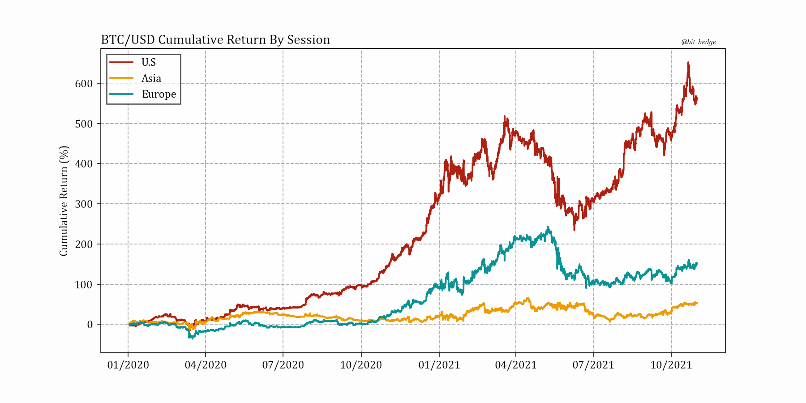

heard it here first
Posts
About
The best quality original analysis and information on crypto and markets.
Links
Bithedge TwitterGlassnode
ZeroHedge
Skew
The Market Ear
Contact
Direct Messagebithedgemail@gmail.com
October 30th, 7:17pm nyc time, 2021.
Perhaps not satisfied with jawboning just the S&P500 well above its peers (5Y performance: spx +120%, msci world ex-us +43%), it’s become apparent that US investors have been nothing short of the pillar of crypto’s recent rise from relative obscurity to a $2.7T asset class.
Nowhere is this more obvious than in Ethereum, the ‘Amazon of information’, where performance during the U.S session since the start of 2020 stacks up at 2700%, vs. the European session at 492% and finally the Asian session with a return of 28%, barely more than one hundredth of the performance had during U.S hours.

Despite ongoing regulations being a worldwide development, a constant barrage of what appeared to be China full-out ‘banning’ crypto quite literally dozens of times and finally appearing to commit with conviction (don’t rule out more headlines) is the immediate suspect behind the glaring underperformance from the Asian session.
Less stunning but just as compelling is the breakdown for the top dog Bitcoin, where once again America drives, Europe rides, and Asia disappoints:
Due to crypto trading 24/7 and the varying open and close times of major stock exchanges, 8:00am to 6:00pm was used to classify session hours in NYC, Brussels, and Beijing, as this is the smallest window possible that captures all market hours in each region. This same window is used on weekends as it is also conceivably the lowest common denominator for the period of local time during which most financial activities take place on any day.
And while Asia’s shortfall can be reasonably attributed to China’s never-ending crackdown, the bifurcation between the U.S and Europe is less easily explained, although one could speculate has been helped by differing fiscal programs, cultural attitudes, and institutional responses between the two regions as a few among many factors.
The one thing this massive divergence makes clear is that despite what some U.S incumbents may think, the market appears to have voted with a resounding yes to crypto more so there than anywhere, and doesn’t appear to be having any second thoughts...